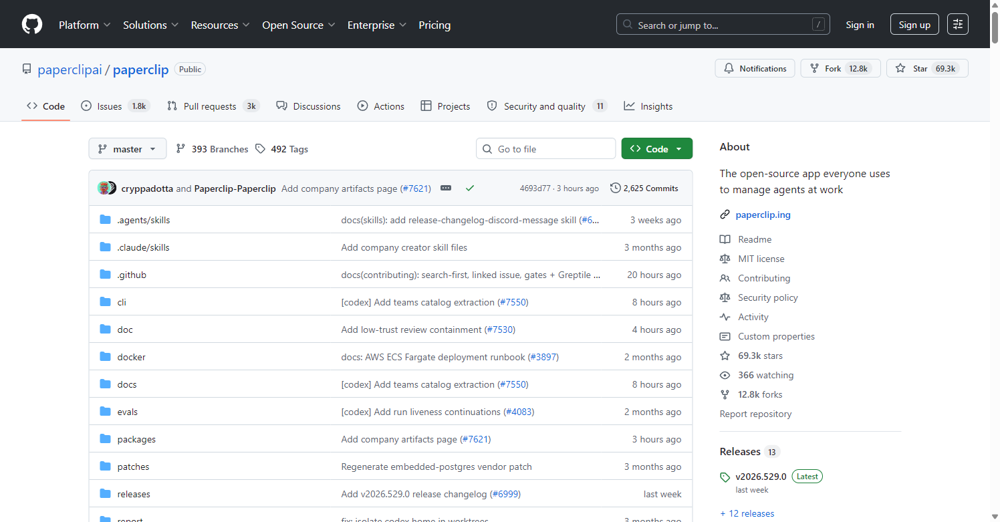
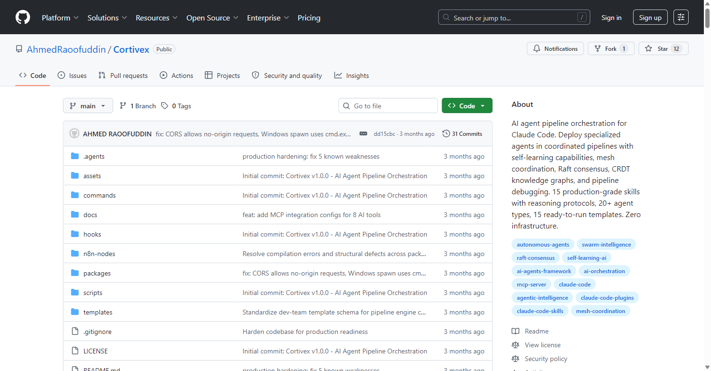
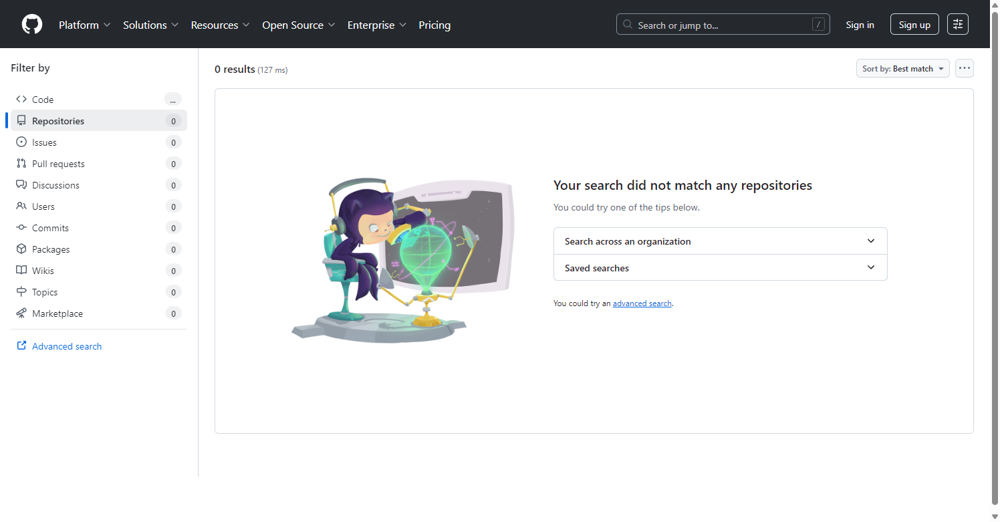
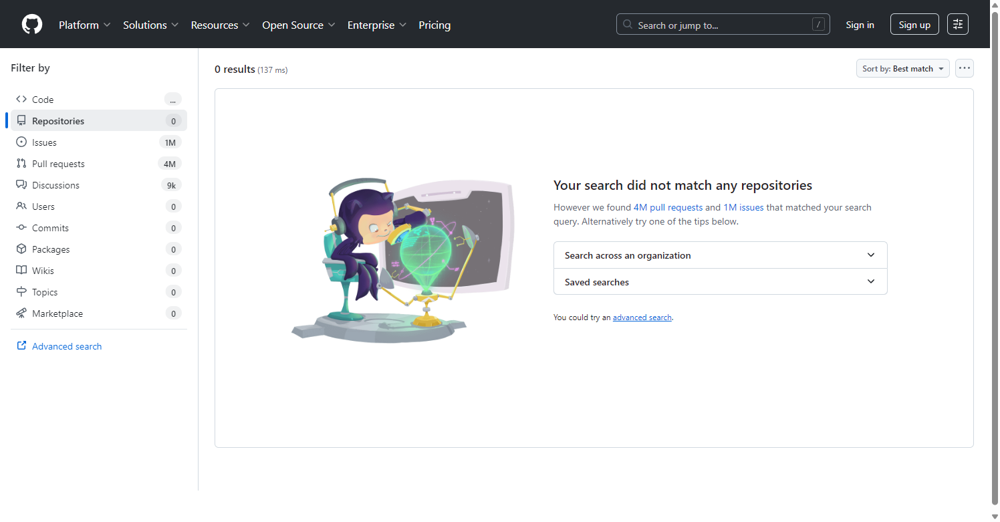
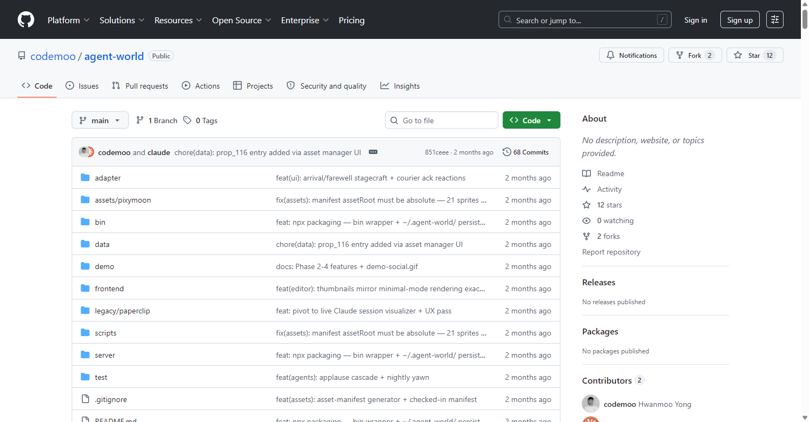
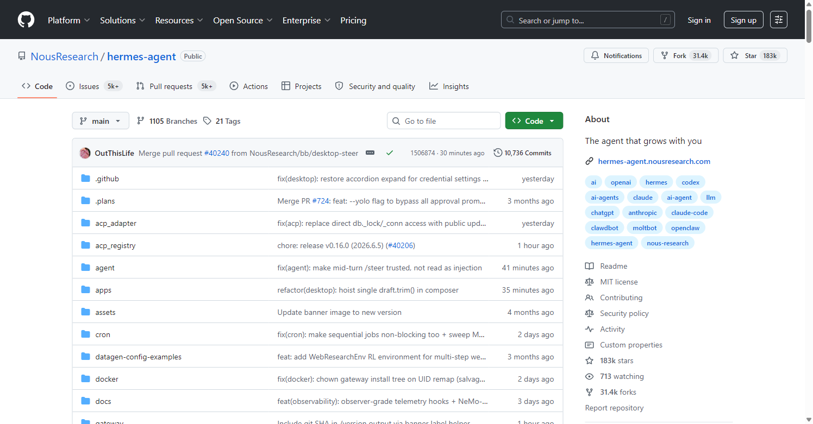

Dashboards, Knowledge Graphs & Live Tracking for Multi-Agent Systems — the companion guide for visualizing 50+ agents in real time with relationship graphs, progress tracking, and cost governance.
Tools purpose-built for visually tracking, debugging, and managing multi-agent swarms with real-time dashboards, DAG editors, and knowledge graphs.





/agents endpoint with live status grid of all running agents
/knowledge-graph with spatial exploration of KB chunks and semantic relationshipsTools for visualizing agent memory, knowledge bases, entity relationships, and execution traces as interactive graphs.
Neo4j-backed graph memory with a force-directed explorer. Agents store and retrieve knowledge as a navigable web of entities and relationships. Built in Rust for performance.
Neo4j + RustInteractive visualization of project entities, file relationships, and dependency structures. Built on Express + WebSocket for real-time graph updates as agents modify the codebase.
Real-timeDedicated /knowledge-graph page with spatial exploration of knowledge base chunks and their semantic relationships. Navigate by clicking nodes to expand related concepts.
Full execution tracing with graph visualization. See every LLM call, tool invocation, and agent decision as a tree. Filter by latency, cost, or error state. Industry standard for LLM observability.
Industry StandardKnowledge graph + RAG dashboard built on Streamlit. Entity-relationship graph visualization with interactive node exploration and document retrieval context.
Streamlit| Tool | Real-time Updates | Knowledge Graph | Agent Progress | Cost Tracking | Multi-Agent Topology | DAG/Workflow Viz | Human-in-Loop UI | Self-Hosted |
|---|---|---|---|---|---|---|---|---|
| Paperclip | ✅ WebSocket | ❌ | ✅ Heartbeat | ✅ Per-agent | ✅ Org Chart | ❌ | ✅ Task Board | ✅ Docker |
| Cortivex | ✅ WebSocket | ✅ Interactive | ✅ Per-node | ⚠️ Basic | ✅ Swarm View | ✅ DAG Editor | ❌ | ✅ Docker |
| Lattice | ✅ Live Monitor | ❌ | ✅ Log Timeline | ✅ Per-agent | ✅ Team Groups | ✅ Auto-generated | ❌ | ✅ npm |
| Construct | ✅ Live DAG | ✅ Kumiho (Neo4j) | ✅ Timeline | ✅ Dashboard | ✅ Teams Graph | ✅ Interactive | ❌ | ✅ Docker |
| Orkestr | ⚠️ Polling | ❌ | ✅ Trace Timeline | ⚠️ Basic | ✅ Delegation | ✅ DAG Builder | ✅ Approval | ✅ Docker |
| Agent World | ✅ Canvas | ❌ | ✅ Animation | ❌ | ✅ RPG Map | ❌ | ❌ | ✅ Express |
| Ruflo Planner | ✅ Live Agents | ❌ | ✅ GOAP Tree | ❌ | ⚠️ Basic | ✅ Plan Tree | ❌ | ✅ Docker |
| Hermes Dashboard | ✅ Streaming | ❌ | ✅ Sessions | ❌ | ❌ | ❌ | ✅ Chat UI | ✅ Docker |
| LaunchDarkly | ✅ Real-time | ❌ | ✅ Per-node | ✅ Metrics | ✅ Topology | ✅ Graph | ❌ | ❌ SaaS |
| OrchStack | ⚠️ Polling | ✅ Embeddings | ✅ Canvas | ✅ Usage | ✅ Infinite Canvas | ✅ React Flow | ✅ HITL | ❌ SaaS |
| Mission Control | ✅ Real-time | ❌ | ✅ Kanban | ⚠️ Basic | ✅ Swarm Mgmt | ❌ | ✅ Hooks | ✅ Self-Hosted |
| LangGraph Studio | ✅ Time-travel | ❌ | ✅ State View | ✅ LangSmith | ✅ Graph | ✅ Graph IDE | ✅ State Edit | ✅ Desktop |
Agent World — Animated tile world where your agents walk to work, rest at home, and buildings light up with activity. Best for teams who want a playful, intuitive view of 100+ agents.
Paperclip — Treats agents as employees with org chart hierarchy, heartbeat monitoring, and per-agent cost dashboards. Best for management-style oversight of agent teams.
Construct (Kumiho) — Force-directed Neo4j graph explorer for agent memory. Agents store knowledge as entities and relationships that you can navigate visually. Best for research-heavy workflows.
Ruflo Goal Planner — Goal-Oriented Action Planning with A* pathfinding displayed as an interactive tree. Best for complex multi-step agent planning with dependencies.
Lattice or LaunchDarkly Agent Graphs — Both work across agent frameworks. Lattice auto-generates graphs from project files; LaunchDarkly externalizes topology with metrics overlay.
Cortivex or Orkestr — Both offer full Docker deployment with DAG editors, real-time execution, and no external dependencies. Cortivex adds knowledge graph; Orkestr adds skill library.
CrewAI Studio / OrchStack / LaunchDarkly — SOC2 certified with SSO, audit logs, and role-based access. Best for regulated industries and large teams.
OrchStack Studio, CrewAI Studio, Dify, Flowise — Drag-and-drop canvas interfaces that require no coding. Generate production agents from visual designs.